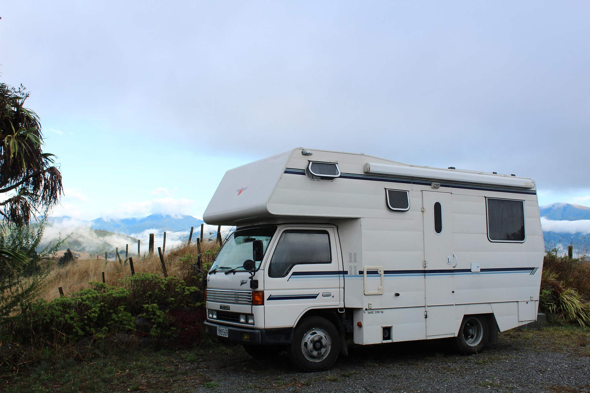

This website is your go-to guide for discovering the incredible scenery of New Zealand, from its massive mountains and glaciers to its beautiful green forests and hot white sandy beaches. We make it easy to plan your next trip by offering simple, pre-made routes and top picks for the best places to see on both the North and South Islands. You’ll also find all the practical help you need, like tips on how to rent a campervan, what the weather is really like, and how to respect the local Māori culture while you're here. Whether you want an action-packed holiday or a quiet getaway, we have everything you need to get started. Now go and explore the wonders of New Zealand.

hello